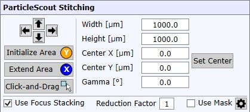
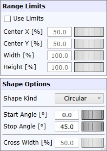

|
ParticleScout拼接
|

ParticleScout拼接将创建高分辨率拼接图像，并在拼接测量完成后打开WITec ParticleScout软件。
除了自定义拼接参数（定义拼接区域）之外，还有以下选项：
缩减因子
对于较大的拼接区域，生成的拼接图像可能具有非常高的分辨率，因此需要大量内存。如果您不需要高分辨率（例如只有大粒子），可以通过增加因子来降低图像分辨率。
注意图像大小（兆字节/千兆字节）。
使用掩模
如果选中，将使用可自定义的掩模仅拼接定义的拼接区域的一部分，请参见下面的掩模选项。
掩模 选项

使用限制
如果选中，将使用定义的中心和大小百分比来"缩小"掩模/仅使用定义的拼接区域的一部分。
中心/大小
允许您定义相对于原始拼接区域的中心位置或大小百分比。
形状类型